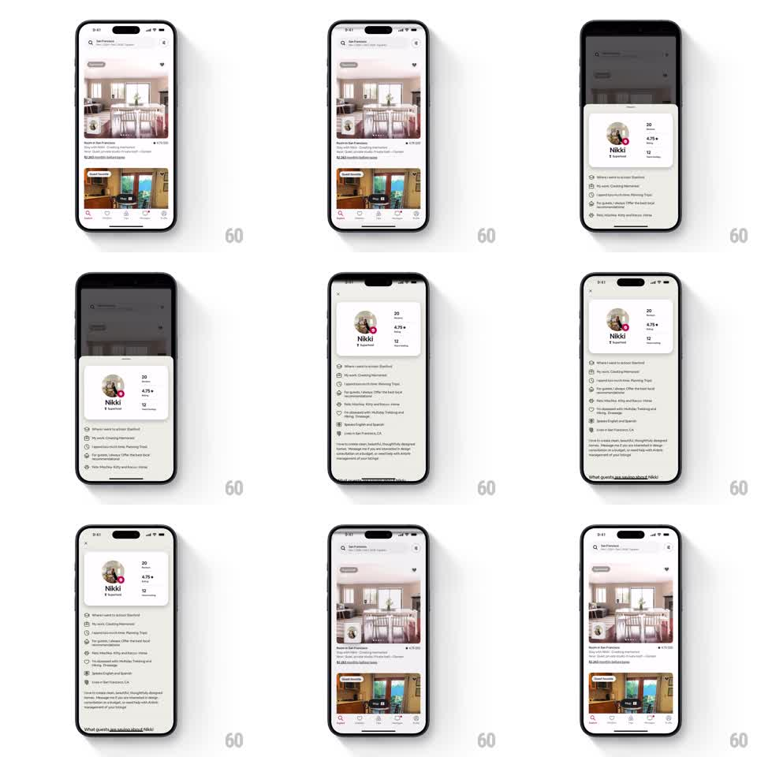

Media
Frame-by-frame

Rebuild this animation 1:1: Airbnb's host reveal - tapping the host avatar on a listing expands it into a bottom-sheet profile card that then stretches into a full-screen host profile, with the avatar morphing continuously through each stage.

Rebuild this animation 1:1: Airbnb's host reveal - tapping the host avatar on a listing expands it into a bottom-sheet profile card that then stretches into a full-screen host profile, with the avatar morphing continuously through each stage. ## Integration Integration: stack-agnostic spec - springs given as stiffness/damping, timed motions as duration + curve; map every value to your framework and animation library of choice. ## Scene Listing feed (photo cards, tab bar). A small circular host avatar sits on the listing. Stage 2: modal card over a dimmed feed - large avatar, name "Nikki", Superhost badge, stat row (20 years hosting, 4.75 rating, 12 reviews), bullet list of hosting facts. Stage 3: full-screen profile with close button, same header plus bio paragraphs and "What guests are saying about Nikki". ## Motion spec Pattern: shared-element morph through three layout stages. - Tap avatar: scrim fades in (0 -> 0.5, 200ms) as a rounded card rises from the bottom (spring ~300/30, ~350ms); the avatar scales and travels from its listing position into the card header (matched geometry, same spring). - Card content (name, stats) fades in 100ms after the card starts moving, staggered ~50ms per row. - Expanding to full screen: the card's corners straighten, it grows to full-bleed (same spring, ~350ms), avatar and header stay pinned while bio content fades in below. - Reverse on dismiss: full-screen collapses back to card to avatar, elements returning to their origin. ## Calibration - The avatar never cuts or reloads - it is one element shared across all three states. - Springs settle in one smooth arc; no bounce on the card. ## Reduced motion Card and full-screen fade/slide without shared-element travel (250ms each). ## Don't miss - Stat row stays glued to the header block through the morph. - Scrim tracks card height: fully dimmed at card stage, gone only when the card is fully dismissed.